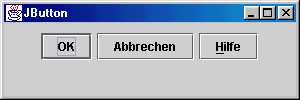
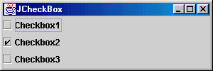
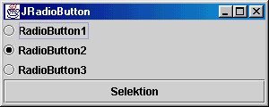

38.2 Buttons
38.2.1 JButton
Swing-Buttons sind uns in den vorangegangenen Abschnitten schon mehrfach
begegnet. Sie sind Instanzen der Klasse JButton
und dienen dazu, Schaltflächen zu erzeugen. Die wichtigsten Konstruktoren
von JButton
sind:
public JButton(String text)
public JButton(Icon icon)
public JButton(String text, Icon icon)
|
javax.swing.JButton |
Ein Button kann also wahlweise mit Beschriftung, mit Icon oder mit
beidem instanziert werden. Auf die Anordnung eines Buttons und seiner
Bestandteile kann mit Hilfe der schon aus Abschnitt 38.1.1
bekannten Methoden zugegriffen werden:
public void setHorizontalTextPosition(int textPosition)
public int getHorizontalTextPosition()
public void setHorizontalAlignment(int alignment)
public int getHorizontalAlignment()
public void setVerticalAlignment(int alignment)
public int getVerticalAlignment()
|
javax.swing.JButton |
JButton
ist wie JMenuItem
(siehe Abschnitt 37.2.1)
aus AbstractButton
abgeleitet und stellt ebenfalls die Methoden setMnemonic,
getMnemonic,
setEnabled
und isEnabled
zur Verfügung. Wird ein JButton
per Mausklick betätigt, sendet er ein ActionEvent
an alle registrierten Listener. Durch Aufruf von doClick
kann ein Buttonklick auch programmgesteuert ausgelöst werden.
Das Beispielprogramm in Listing 38.7
erzeugt drei Buttons und ordnet sie nebeneinander in einem JFrame
an:
- Der »OK«-Button ist eine Instanz unserer eigenen (aus
JButton
abgeleiteten) Klasse DefaultButton.
Seine Besonderheit besteht darin, dass er sich durch Aufruf von setDefaultButton
bei der an den Konstruktor übergebenen RootPane registriert.
Dadurch kann er unabhängig davon, welches Dialogelement gerade
den Fokus hat, auch durch Drücken von [ENTER]
betätigt werden.
- Der »Abbrechen«-Button ist eine Instanz der ebenfalls
selbst definierten und aus JButton
abgeleiteten Klasse CancelButton.
Seine Besonderheit besteht darin, dass er beim Drücken von [ESCAPE]
die Methode doClick
aufruft und dadurch einen Buttonklick simuliert.
- Der »Hilfe«-Button ist eine direkte Instanzierung von
JButton.
Er definiert ein Mnemonic für die Tastenkombination [ALT]+[H],
registriert den ActionListener
und wird dann der ContentPane hinzugefügt.
Wir wollen uns zunächst den Code für die Klasse DefaultButton
ansehen:
001 /* DefaultButton.java */
002
003 import javax.swing.*;
004
005 public class DefaultButton
006 extends JButton
007 {
008 public DefaultButton(String title, JRootPane rootpane)
009 {
010 super(title);
011 rootpane.setDefaultButton(this);
012 }
013 }
|
DefaultButton.java |
Listing 38.5: Die Klasse DefaultButton
Auch die Klasse CancelButton
ist ähnlich einfach aufgebaut:
001 /* CancelButton.java */
002
003 import java.awt.event.*;
004 import javax.swing.*;
005
006 public class CancelButton
007 extends JButton
008 {
009 public CancelButton(String title)
010 {
011 super(title);
012 ActionListener al = new ActionListener()
013 {
014 public void actionPerformed(ActionEvent event)
015 {
016 String cmd = event.getActionCommand();
017 if (cmd.equals("PressedESCAPE")) {
018 doClick();
019 }
020 }
021 };
022 registerKeyboardAction(
023 al,
024 "PressedESCAPE",
025 KeyStroke.getKeyStroke(KeyEvent.VK_ESCAPE, 0),
026 JButton.WHEN_IN_FOCUSED_WINDOW
027 );
028 }
029 }
|
CancelButton.java |
Listing 38.6: Die Klasse CancelButton
Nun können wir uns den Programmcode unseres Beispielprogramms
ansehen:
001 /* Listing3807.java */
002
003 import java.awt.*;
004 import java.awt.event.*;
005 import javax.swing.*;
006
007 public class Listing3807
008 extends JFrame
009 implements ActionListener
010 {
011 public Listing3807()
012 {
013 super("JButton");
014 addWindowListener(new WindowClosingAdapter(true));
015 Container cp = getContentPane();
016 cp.setLayout(new FlowLayout());
017 JPanel panel = new JPanel();
018 //OK-Button
019 JButton okButton = new DefaultButton("OK", getRootPane());
020 okButton.addActionListener(this);
021 panel.add(okButton);
022 //Abbrechen-Button
023 JButton cancelButton = new CancelButton("Abbrechen");
024 cancelButton.addActionListener(this);
025 panel.add(cancelButton);
026 //Hilfe-Button
027 JButton helpButton = new JButton("Hilfe");
028 helpButton.setMnemonic('H');
029 helpButton.addActionListener(this);
030 panel.add(helpButton);
031 //Panel hinzufügen
032 cp.add(panel);
033 }
034
035 public void actionPerformed(ActionEvent event)
036 {
037 System.out.println(event.getActionCommand());
038 }
039
040 public static void main(String[] args)
041 {
042 Listing3807 frame = new Listing3807();
043 frame.setLocation(100, 100);
044 frame.setSize(300, 100);
045 frame.setVisible(true);
046 }
047 }
|
Listing3807.java |
Listing 38.7: Die Klasse JButton
Die Ausgabe des Programms ist:

Abbildung 38.5: Die Klasse JButton
38.2.2 JCheckBox
Die Klasse JCheckBox
stellt einen Button dar, der vom Anwender wahlweise an- oder ausgeschaltet
werden kann. Er wird meist verwendet, um boolesche Werte auf einer
GUI-Oberfläche darzustellen. JCheckBox
ist von der Klasse JToggleButton
abgeleitet, die als Abstraktion von Buttons, die ihren Zustand ändern
können, auch Basisklasse von JRadioButton
ist.
JCheckBox
kann eine textuelle Beschriftung oder ein Icon oder beides enthalten.
Die wichtigsten Konstruktoren sind:
Mit dem Parameter selected kann
bereits bei der Instanzierung angegeben werden, ob die Checkbox aktiviert
oder deaktiviert sein soll. Später kann der Aktivierungszustand
mit setSelected
gesetzt und mit isSelected
abgefragt werden:
Wie ein JButton
sendet eine JCheckBox
bei jeder Betätigung ein ActionEvent
an registrierte Listener. Zudem wird bei Zustandsänderungen ein
ItemEvent
versendet, auf das ein ItemListener
reagieren kann.
Das folgende Programm erzeugt drei Checkboxen in einem Panel und gibt
alle Zustandsänderungen auf der Konsole aus:
001 /* Listing3808.java */
002
003 import java.awt.*;
004 import java.awt.event.*;
005 import javax.swing.*;
006 import javax.swing.event.*;
007
008 public class Listing3808
009 extends JFrame
010 implements ItemListener
011 {
012 public Listing3808()
013 {
014 super("JCheckBox");
015 addWindowListener(new WindowClosingAdapter(true));
016 JPanel panel = new JPanel();
017 panel.setLayout(new GridLayout(3, 1));
018 for (int i = 1; i <= 3; ++i) {
019 JCheckBox cb = new JCheckBox("Checkbox" + i, i == 2);
020 cb.addItemListener(this);
021 panel.add(cb);
022 }
023 getContentPane().add(panel, BorderLayout.CENTER);
024 }
025
026 public void itemStateChanged(ItemEvent e)
027 {
028 JCheckBox cb = (JCheckBox)e.getSource();
029 int change = e.getStateChange();
030 if (change == ItemEvent.SELECTED) {
031 System.out.println(cb.getText() + ": SELECTED");
032 } else if (change == ItemEvent.DESELECTED) {
033 System.out.println(cb.getText() + ": DESELECTED");
034 }
035 }
036
037 public static void main(String[] args)
038 {
039 Listing3808 frame = new Listing3808();
040 frame.setLocation(100, 100);
041 frame.setSize(300, 100);
042 frame.setVisible(true);
043 }
044 }
|
Listing3808.java |
Listing 38.8: Die Klasse JCheckbox
Die Programmausgabe ist:

Abbildung 38.6: Die Klasse JCheckBox
38.2.3 JRadioButton
Die Klasse JRadioButton
ähnelt der Klasse JCheckBox.
Auch sie stellt einen Button dar, der wahlweise an- oder ausgeschaltet
werden kann. Anders als bei JCheckBox
ist in einer Gruppe von Radiobuttons allerdings immer nur ein Button
zur Zeit aktiviert, alle anderen sind deaktiviert. Die wichtigsten
Konstruktoren von JRadioButton
sind:
Die übrigen Methoden können so verwendet werden, wie es
bei JCheckBox
beschrieben wurde. Um die Buttons zu gruppieren, ist eine ButtonGroup
zu instanzieren und die Buttons sind durch Aufruf von add
hinzuzufügen. Mit getSelection
kann auf das ButtonModel
des selektierten Elements zugegriffen werden, getElements
liefert alle Buttons der Gruppe:
public void add(AbstractButton b)
public ButtonModel getSelection()
public Enumeration getElements()
|
javax.swing.ButtonGroup |
Das folgende Programm enthält drei Radiobuttons, die über
eine ButtonGroup
gruppiert werden. Der zusätzliche Button »Selektion«
ermittelt das selektierte Element und gibt dessen Kommandonamen auf
der Konsole aus:
001 /* Listing3809.java */
002
003 import java.awt.*;
004 import java.awt.event.*;
005 import javax.swing.*;
006
007 public class Listing3809
008 extends JFrame
009 implements ActionListener
010 {
011 private ButtonGroup group = new ButtonGroup();
012
013 public Listing3809()
014 {
015 super("JRadioButton");
016 addWindowListener(new WindowClosingAdapter(true));
017 //RadioButton-Panel
018 JPanel panel = new JPanel();
019 panel.setLayout(new GridLayout(3, 1));
020 for (int i = 1; i <= 3; ++i) {
021 JRadioButton rb = new JRadioButton("RadioButton" + i, i == 2);
022 rb.setActionCommand(rb.getText());
023 panel.add(rb);
024 group.add(rb);
025 }
026 getContentPane().add(panel, BorderLayout.CENTER);
027 //Selektion-Button
028 JButton button = new JButton("Selektion");
029 button.addActionListener(this);
030 getContentPane().add(button, BorderLayout.SOUTH);
031 }
032
033 public void actionPerformed(ActionEvent event)
034 {
035 String cmd = event.getActionCommand();
036 if (cmd.equals("Selektion")) {
037 ButtonModel selected = group.getSelection();
038 System.out.print("Selektiert: ");
039 if (selected != null) {
040 System.out.println(selected.getActionCommand());
041 }
042 }
043 }
044
045 public static void main(String[] args)
046 {
047 Listing3809 frame = new Listing3809();
048 frame.setLocation(100, 100);
049 frame.setSize(300, 120);
050 frame.setVisible(true);
051 }
052 }
|
Listing3809.java |
Listing 38.9: Die Klasse JRadioButton
Die Programmausgabe ist:

Abbildung 38.7: Die Klasse JRadioButton